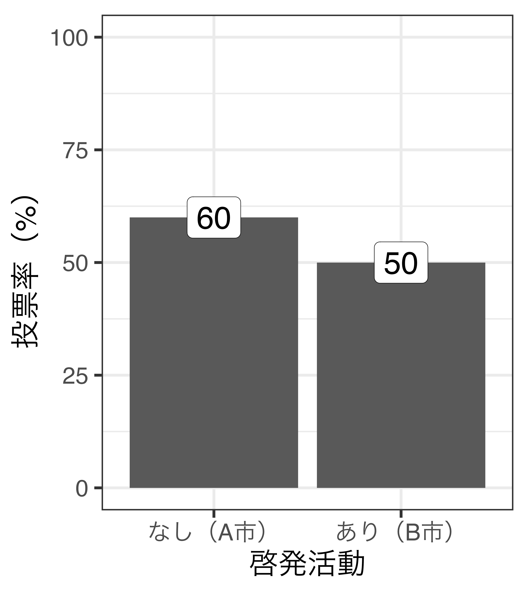
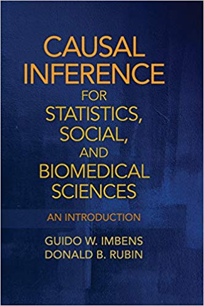

社会科学における因果推論
2/ 因果推論の考え方
宋 財泫
関西大学総合情報学部
因果推論とその敵
社会科学における因果推論の意味
Morgan and Winship (2014) Counterfactuals and Causal Inference: Methods And Principles For Social Research. Cambridge.
More has been learned about causal inference in the last few decades than sum total of everything that had been learned about it in all prior recorded history. (Gary King)


相関から因果へ
原因（\(X\)）と結果（\(Y\)）の関係：啓発活動と投票率の関係（架空の例）
- \(\bigcirc\): 啓発活動が行われる選挙区の投票率は低い（相関関係）
- \(\times\): 啓発活動は投票率を下げる（因果関係）
- \(\Rightarrow\) 統計分析から得られる結果は相関関係のみ
- 理論/デザインを用い、観察された相関関係が因果関係であることを説得
- 因果関係を担保してくれる統計的手法はない。
- 「これは相関関係でなく因果関係である」と主張するためには、内生性がないことを示す必要がある。
同時性
Simultaneity

原因と結果の間に双方向の因果関係が存在
- 例) お酒 (原因; X) とストレス (結果; Y) の関係
- 酒を飲むとストレスが貯まる
- ストレス解消のために酒を飲む
- 酒を飲むとストレスが貯まる
- ストレス解消のために酒を飲む
- 酒を飲むとストレスが貯まる
- …
- \(\rightarrow\) 地獄のような無限ループ
\(\Rightarrow\) 酒がストレスに与える影響は?
見かけ上の相関
Spurious Correlation、擬似相関
- たまたま相関関係がある場合
- 例) メイン州の離婚率一人当たりマーガリンの消費量

見かけ上の相関
Spurious Correlation、擬似相関
- 共通の要因からの影響（ビールとアイスクリーム消費量）
見かけ上の相関
Spurious Correlation、擬似相関
- 共通の要因からの影響（ゲームをやると身長が伸びる説）

逆の因果
Reverse Causality
- 例) 心臓移植と生存率の例
| 5年後に死亡 | 5年後に生存 | ||
|---|---|---|---|
| 心臓移植を | 受けた | 10名 | 5名 |
| 受けなかった | 5名 | 10名 |
- 心臓移植を受けたら死亡確率が上がる?
- 死亡確率が高い人が心臓移植を受ける?
逆の因果
Reverse Causality
- 「人気だから4文字に略されるのか、4文字に略せるからヒットす るのか、どっちなんでしょうね」
欠落変数バイアス
Omitted Variable Bias
例) 真のモデルが\(Y = \beta_0 + \beta_1 \cdot X + \beta_2 \cdot Z + e\)の場合
- モデルに\(Z\)が含まれていなくても\(\beta_1\)の推定値は変化\(\times\)
- \(X\)と\(Z\)は独立（\(X \perp Z\)）
- \(\sigma_{X, Z} = 0\)
欠落変数バイアス
Omitted Variable Bias
例) 真のモデルが\(Y = \beta_0 + \beta_1 \cdot X + \beta_2 \cdot Z + e\)の場合
- モデルに\(Z\)が含まれていない場合、\(\beta_1\)の推定値にバイアス
- \(Z \rightarrow X\)の関係が存在
- \(\sigma_{X, Z} \neq 0\)
- \(\beta_1\)の真の値（=不偏推定量）を推定するためには\(X\)と\(Y\)両方と相関する変数すべてが必要
- そもそも、「真の値」とは？
- \(X\)と\(Y\)両方と相関するすべての変数は特定可能? 測定可能?
- \(\rightarrow\) データ分析から得られた結果はあくまでも「分析モデルが想定している世界」のものに過ぎない
- 定量的手法は反証可能性を高めやすい手法（=科学的な手法になりやすい）であって、科学そのものも、得られた結果が真理であることを保障するものでもない。
自己選択バイアス
(Self-)Selection Bias
- 例1) 職業訓練と期待収入
| 3年後の収入 | ||
|---|---|---|
| 職業訓練を | 受けた | 6349ドル |
| 受けなかった | 6984ドル |
- 職業訓練を受けたら収入が上がる?
- もともと低収入の人が職業訓練を受けようとする?
- 参考) 心臓移植の例も自己選択のバイアスとして解釈可能
- 参考) 交絡因子の不在として解釈可能（就労意欲など）
内生性
これまでの多くの例は内生性（endogeneity）の問題
- 内生性: 説明変数と誤差項間に相関が存在
- 誤差項と相関のある説明変数: 内生変数（endogenous variable）
- 内生性がある場合、推定値は一致推定量でも、不偏推定量でもはない
- サンプルサイズ（\(N\)）をいくら増やしても無駄
- 内生性の原因
- 同時性
- 欠落変数バイアス
- （体系的な）測定誤差
- 自己選択バイアス
- 最近の教科書はこれはすべてを自己選択バイアスや欠落変数バイアスでまとめる傾向
単純比較の罠
啓発活動と投票率の関係（架空の例）

- 単純比較の手法
- 平均値の比較、平均値の差の検定（\(t\)検定、ANOVA）、単回帰分析など
- 啓発ありの投票率 - 啓発なしの投票率 = -10%p
- 内生性がない場合、「啓発活動は投票率を-10%p下げる」と主張できる。
- 本当に、本当に、本当に、内生性はないのか。
内生性は?
- \(Y\): 投票率
- \(X\): 啓発活動の有無
- \(W\): 若者の割合
- \(Z\): これまでの投票率
- \(e\): \(X\)と\(Z\)以外に、\(Y\)に影響を与える要因
- 投票率が低い選挙区ほど、啓発活動を行う傾向
- 投票率が元々低い選挙区の場合、今回の投票率も低い傾向
- \(\Rightarrow\) 自己選択バイアス/欠落変数バイアスの存在
- 本当に比較すべき対象は…
- 啓発活動を行わなかったA市 vs. 行ったA市
- 啓発活動を行わなかったB市 vs. 行ったB市
- これらは比較可能か?
相関から因果へ
内生性の除外 \(\rightarrow\) 因果効果の推定


因果推論の根本問題
因果関係の例
ソンさんの講義を履修することで期待年収が上がるか
- 池田君の場合: ソンさんの講義を履修し、年収が5000万円に
- ソンさんの授業のおかげで富裕層になった（次は社交界進出）
- 友達に教えてあげよう
講義履修の効果
- 処置: ソンさんの講義を履修するか否か
- 効果: 履修した場合の年収 − 履修しなかった場合の年収
因果関係の例
ソンさんの講義を履修することで期待年収が上がるか
- 池田君の場合: ソンさんの講義を履修し、年収が5000万円に
- ソンさんの授業のおかげで富裕層になった（次は社交界進出）
- 友達に教えてあげよう
講義履修の効果（ケース1）
- 池田君がソンさんの授業を履修しなくても年収5000万円なら
- ソンさんの講義の因果効果は0
| 履修しなかった場合の年収(A) | 履修した場合の年収(B) | 効果(B-A) | |
|---|---|---|---|
| ケース1 | 5000万 | 5000万 | 0万 |
因果関係の例
ソンさんの講義を履修することで期待年収が上がるか
- 池田君の場合: ソンさんの講義を履修し、年収が5000万円に
- ソンさんの授業のおかげで富裕層になった（次は社交界進出）
- 友達に教えてあげよう
講義履修の効果（ケース2）
- 池田君がソンさんの授業を履修しなかった場合、年収1000万円なら
- ソンさんの講義の因果効果は4000万円
- 一生ソンさんには頭が上がらない
| 履修しなかった場合の年収(A) | 履修した場合の年収(B) | 効果(B-A) | |
|---|---|---|---|
| ケース2 | 1000万 | 5000万 | 4000万 |
因果関係の例
ソンさんの講義を履修することで期待年収が上がるか
- 池田君の場合: ソンさんの講義を履修し、年収が5000万円に
- ソンさんの授業のおかげで富裕層になった（次は社交界進出）
- 友達に教えてあげよう
講義履修の効果（ケース3）
- 池田君がソンさんの授業を履修しなかった場合、年収8000万円なら
- ソンさんの講義の因果効果は-3000万
- ソンさんは悪くない
| 履修しなかった場合の年収(A) | 履修した場合の年収(B) | 効果(B-A) | |
|---|---|---|---|
| ケース3 | 8000万 | 5000万 | -3000万 |
因果関係の例
ソンさんの講義を履修することで期待年収が上がるか
- 池田君の場合: ソンさんの講義を履修し、年収が5000万円に
- ソンさんの授業のおかげで富裕層になった（次は社交界進出）
- 友達に教えてあげよう
講義履修の効果
- ソンさんの講義を履修しなかった場合の池田君の年収は…?
- 個人（池田君）における処置効果を推定する際にはこれが不可欠
| 履修しなかった場合の年収(A) | 履修した場合の年収(B) | 効果(B-A) | |
|---|---|---|---|
| ケース1 | 5000万 | 5000万 | 0万 |
| ケース2 | 1000万 | 5000万 | 4000万 |
| ケース3 | 8000万 | 5000万 | -3000万 |
潜在的結果枠組み
Neyman-Rubin-HollandのPotential Outcome Framework
- \(i\) : 学生ID ( \(i = 1,2,3,...,N\) )
- \(T\) : 処置
- 学生 \(i\) が謎の薬を飲んだ ( \(T_i = 1\) )
- 学生 \(i\) が謎の薬を飲まなかった ( \(T_i = 0\) )
- \(Y_i(T_i = 1)\) : 学生 \(i\) が謎の薬を飲んだ場合の数学成績
- \(Y_i(T_i = 0)\) : 学生 \(i\) が謎の薬を飲まなかった場合の数学成績
- \(ITE_i = Y_i(T_i = 1) − Y_i(T_i = 0)\) : 学生iにおける薬の処置効果
- ITE: Individual Treatment Effect (個人における処置効果)
- = UTE: Unit Treatment Effect
- 全く同じ個人において薬を飲んだ場合と飲まなかった場合の数学成績の差 = 謎の薬の因果効果
- ITE: Individual Treatment Effect (個人における処置効果)
薬の効果は?
ITEの平均値は−4であり、個人差はあるものの、全体的に薬は成績に負の影響
| \(i\) | \(T_i\) | \(Y_i(T_i = 0)\) | \(Y_i(T_i = 1)\) | \(ITE_i\) |
|---|---|---|---|---|
| 1 | 1 | 77 | 85 | 8 |
| 2 | 1 | 49 | 59 | 10 |
| 3 | 1 | 60 | 66 | 6 |
| 4 | 0 | 61 | 44 | -17 |
| 5 | 0 | 50 | 39 | -11 |
| 6 | 0 | 75 | 55 | -20 |
| 平均 | 62 | 58 | -4 |
因果推論の根本問題
しかし、観察できるのは\(Y_i(T_i = 1)\)か\(Y_i(T_i = 0)\)、片方のみ
- \(Y_i(T_i = 0)\)は反実仮想（counterfactual）であり、観察不可 (\(i \in \{1,2,3\}\))
- \(Y_i(T_i = 1)\)も反実仮想(\(i \in \{4,5,6\}\))
| \(i\) | \(T_i\) | \(Y_i(T_i = 0)\) | \(Y_i(T_i = 1)\) | \(ITE_i\) |
|---|---|---|---|---|
| 1 | 1 | ? | 85 | ? |
| 2 | 1 | ? | 59 | ? |
| 3 | 1 | ? | 66 | ? |
| 4 | 0 | 61 | ? | ? |
| 5 | 0 | 50 | ? | ? |
| 6 | 0 | 75 | ? | ? |
| 平均 | 62 | 70 | 8 |
世界一受けたいソンさんの授業
履修者5名と非履修者5名の年収の比較
- ITEは分からないが、平均値の差分を見ると、+100万円の効果
| \(i\) | \(T_i\) | \(Y_i(T_i = 0)\) | \(Y_i(T_i = 1)\) | \(ITE_i\) |
|---|---|---|---|---|
| 1 | 1 | ? | 700 | ? |
| 2 | 1 | ? | 1000 | ? |
| 3 | 1 | ? | 550 | ? |
| 4 | 1 | ? | 350 | ? |
| 5 | 1 | ? | 400 | ? |
| 6 | 0 | 400 | ? | ? |
| 7 | 0 | 500 | ? | ? |
| 8 | 0 | 350 | ? | ? |
| 9 | 0 | 750 | ? | ? |
| 10 | 0 | 500 | ? | ? |
| 平均 | 500 | 600 | 100 |
世界一受けたいソンさんの授業
履修者5名と非履修者5名の年収の比較（ケース1）
- ITEは分からないが、平均値の差分を見ると、+100万円の効果
- 80万円の価値があるソンさんの講義、みんなで履修しよう!
| \(i\) | \(T_i\) | \(Y_i(T_i = 0)\) | \(Y_i(T_i = 1)\) | \(ITE_i\) |
|---|---|---|---|---|
| 1 | 1 | 550 | 700 | 150 |
| 2 | 1 | 650 | 1000 | 350 |
| 3 | 1 | 600 | 550 | -50 |
| 4 | 1 | 300 | 350 | 50 |
| 5 | 1 | 300 | 400 | 100 |
| 6 | 0 | 400 | 300 | -100 |
| 7 | 0 | 500 | 700 | 200 |
| 8 | 0 | 350 | 600 | 250 |
| 9 | 0 | 750 | 700 | -50 |
| 10 | 0 | 500 | 400 | -100 |
| 平均 | 490 | 570 | 80 |
世界一受けたいソンさんの授業
履修者5名と非履修者5名の年収の比較（ケース2）
- ITEは分からないが、平均値の差分を見ると、+100万円の効果
- ソンさんは悪くない
| \(i\) | \(T_i\) | \(Y_i(T_i = 0)\) | \(Y_i(T_i = 1)\) | \(ITE_i\) |
|---|---|---|---|---|
| 1 | 1 | 800 | 700 | -100 |
| 2 | 1 | 650 | 1000 | 350 |
| 3 | 1 | 600 | 550 | -50 |
| 4 | 1 | 400 | 350 | -50 |
| 5 | 1 | 350 | 400 | 50 |
| 6 | 0 | 400 | 300 | -100 |
| 7 | 0 | 500 | 500 | 0 |
| 8 | 0 | 350 | 400 | 50 |
| 9 | 0 | 750 | 500 | -250 |
| 10 | 0 | 500 | 400 | -100 |
| 平均 | 530 | 510 | -20 |
因果推論の根本問題
- \(Y_i(T_i = 1)\)か\(Y_i(T_i = 0)\)、片方のみしか観察できない状態においてITEから因果効果を推定することは不可能
- 因果推論の根本問題 (The Fundamental Problem of Causal Inference)
- 解決方法
- もう一回、過去に戻って異なる処置を行う
因果推論の根本問題
- \(Y_i(T_i = 1)\)か\(Y_i(T_i = 0)\)、片方のみしか観察できない状態において、ITEから因果効果を推定することは不可能
- ただし、ドラえもんが存在する世界線を除く
- 因果推論の根本問題 (The Fundamental Problem of Causal Inference)
- 潜在的結果を直接観察する方法
- ただし、個々人の潜在的結果ではなく、集団における潜在的結果
- 平均処置効果 (ATE; Average Treatment Effect)
- 平均値の差分から平均的な因果効果を推定
- しかし、…
- 無作為割当の重要性
平均取るだけでOK?
観察されたデータから差分を計算するだけではATEは推定不可能
| \(i\) | \(T_i\) | \(Y_i(T_i = 0)\) | \(Y_i(T_i = 1)\) | \(ITE_i\) |
|---|---|---|---|---|
| 1 | 1 | ? | 700 | ? |
| 2 | 1 | ? | 1000 | ? |
| 3 | 1 | ? | 550 | ? |
| 4 | 1 | ? | 350 | ? |
| 5 | 1 | ? | 400 | ? |
| 6 | 0 | 400 | ? | ? |
| 7 | 0 | 500 | ? | ? |
| 8 | 0 | 350 | ? | ? |
| 9 | 0 | 750 | ? | ? |
| 10 | 0 | 500 | ? | ? |
| 平均 | 500 | 600 | 100 |
信頼できるATEの条件
ATE推定値の信頼性を損なう敵: 内生性 (しかも、常に存在する)
例) やる気のある学生だけがソンさんの講義を履修した場合
- 自己選択バイアス
- ソンさんの講義は鬼畜すぎるため、やる気満々の学生には役に立つものの、やる気のない学生にとってはむしろ学習意欲が低下
- 疑似相関
- やる気のある学生はいろんな方面で頑張るから、将来年収が高くなる。
- 測定誤差
- 履修者の年収はジンバブエ・ドルで測定されている可能性も（これはないか）
内生性は因果推論の敵! どうすれば…?
\(\downarrow\)
無作為割当 (Random Assignment)